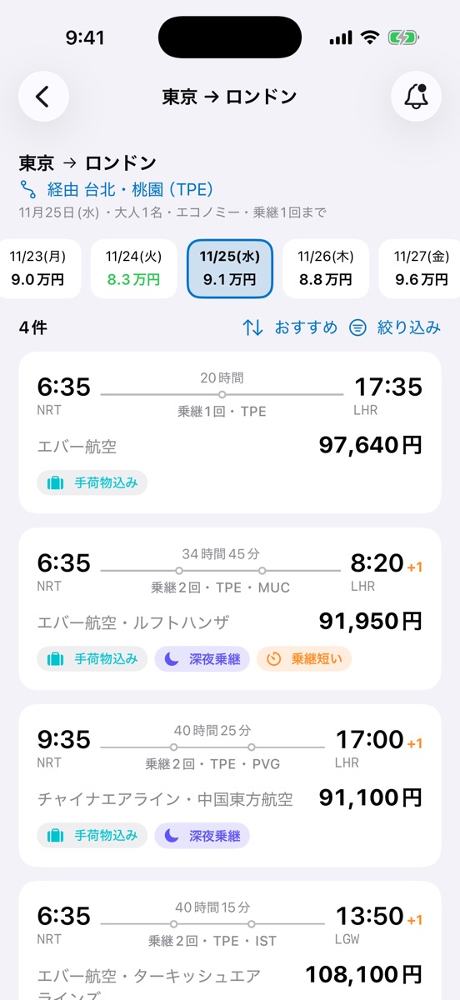
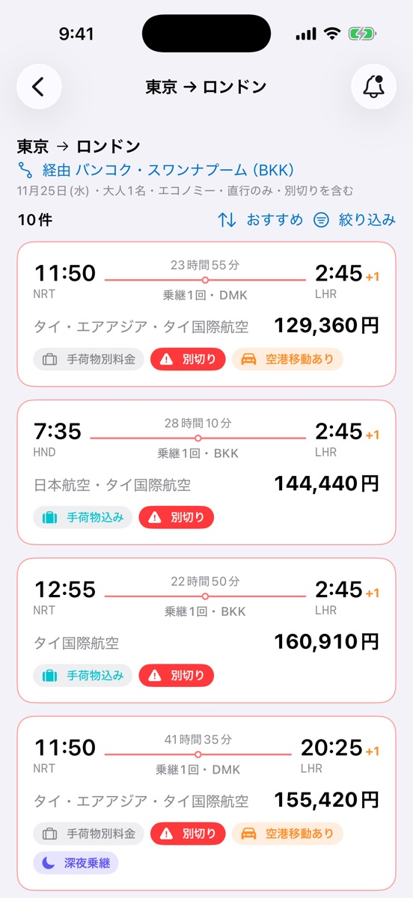

そらくらべ
乗換案内のように経由地を選んで、航空券の料金を比べられる iPhone アプリ
行きたい街を経由して旅したいのに、比較サイトでは安い別ルートばかり出てくる——。そらくらべは、経由地を指定すると必ずそこを通る便だけを並べる、航空券の料金比較アプリです。予約は各予約サイトで行います。
できること
経由地を指定して探す
出発 → 経由 → 到着を、乗換案内のように縦に並べて入力。ソウル・台北・ドーハ・ヘルシンキなどの主要ハブから選べ、経由地は2つまで指定できます。
別切りの組み合わせも
1枚の航空券で経由地を通る便がなければ、区間ごとの航空券を組み合わせて探します。乗継時間は3時間以上（変更可）の組み合わせだけ。
前後±3日の最安値
出発日の前後3日の最安値を横に並べて表示。1日ずらすだけで安くなる日がひと目で分かります。
都市まるごと検索
「東京」なら羽田と成田、「大阪」なら関西・伊丹・神戸をまとめて検索。空港ごとにも選べます。
注意点はバッジで
「別切り」「空港移動あり」「深夜乗継」「乗継短い」をカードに表示。区間ごとのタイムラインで、乗継の様子も確認できます。
価格アラート
気になる路線と目標金額を登録しておけます（値下がりの通知は今後のアップデートで対応予定）。
画面イメージ




※ 開発中の画面です。表示している便・料金はサンプルで、実際の運賃ではありません。
予約について
- そらくらべのアプリ内では予約・決済を行いません。「予約サイトで見る」から各予約サイトに移動して手続きします。
- 表示する料金は目安です。料金・空席・手荷物の条件は、予約サイトでの表示が優先されます。
- 予約サイトへのリンクには、提携先の紹介リンク（アフィリエイトリンク）を含む場合があります。
「別切り」の行程について：航空券が別々のため、前の便が遅れて乗り遅れても補償や振替はありません。乗継地で荷物を受け取って預け直す必要があり、入国（ビザや入国審査）が必要になる場合があります。
動作環境
| 公開予定 | 近日公開予定（App Store） |
|---|---|
| 対応OS | iOS 17.0 以降 |
| 対応端末 | iPhone（縦向き） |
| 価格 | 無料 |
| アカウント | 登録・ログインは不要です |
お問い合わせ
ご意見・ご要望・不具合のご報告は、下のメールアドレスまでお願いします。
お返事までに数日かかることがあります。不具合のご報告の際は、iPhone の機種・iOS のバージョン・どの画面で何をしたときに起きたかを添えていただけると助かります。
プライバシー
そらくらべは、氏名やメールアドレスなどの個人情報を集めていません。詳しくは プライバシーポリシー をご覧ください。